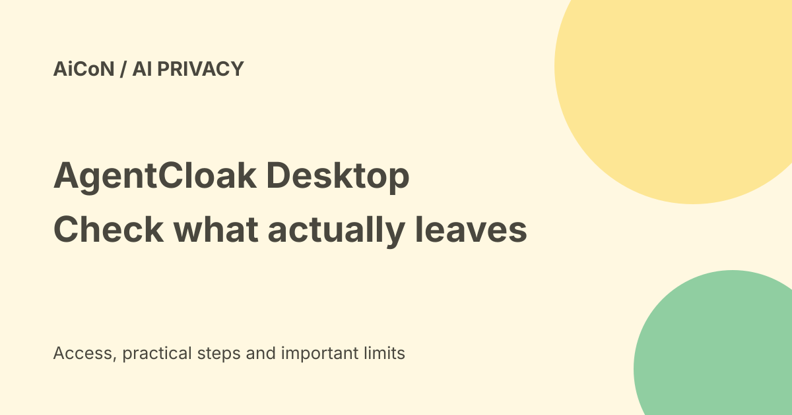

AgentCloak Desktop: free data cloaking and protection limits
AgentCloak Desktop is InCountry's free individual-use privacy tool. The vendor says it detects sensitive text locally, replaces it with synthetic stand-ins before a supported chatbot receives it, then restores values in the reply. That is a useful design to evaluate, not a guarantee that every secret is hidden.

What is cloaking?
The official product page describes substituting private values with consistent synthetic replacements. A mapping, called a digital twin, connects the original and replacement values so a reply can be restored on your device.
This differs from a chatbot's retention setting. If substitution works, selected original values are not in the outbound prompt; a retention policy instead governs what happens after data reaches a service. Neither removes all privacy risks.
What the free product lists
The page lists names, email addresses, phone numbers, URLs, addresses, Social Security/tax IDs and bank routing/account numbers. These are vendor-supported categories, not verified coverage of every country's document format or all contextual clues.
A prompt can reveal a person through an unusual job, location, event or combination of facts even after a name is changed. Images, attachments, copied tables and unsupported app flows need their own verification. The commercial Server product separately advertises uploaded-file cloaking and additional categories.
Browser versus desktop-app support
The page names Chrome, Safari and Edge browser extensions and Mac/Windows desktop installation. Its marketing lists major browser chatbots, while the specific FAQ lists ChatGPT, Claude, Cowork, Grok and DeepSeek and says native chatbot-app support currently covers ChatGPT Desktop, with more coming.
Do not turn a Mac/Windows installer into a promise that every installed Gemini, Copilot or Claude application is intercepted. Check the exact app, browser, version and supported workflow on the official installation page.
Languages and India
The free Desktop list names English, Spanish, French, German, Italian, Portuguese and Dutch. It does not list Hindi or Malayalam. The enterprise Server product advertises more languages, which is not the same as free Desktop support.
No Aadhaar, PAN, Indian address or bank-format accuracy test was performed. Use synthetic samples and check the result rather than assuming a general tax-ID category covers every Indian identifier.
The Remember setting
The FAQ says turning Remember on stores both real values and synthetic replacements on your computer, reducing repeated approvals. Local storage is still storage. Review device access, backups and removal before keeping sensitive mappings.
The vendor says its small detection model runs on your computer. This does not independently establish the installer's permissions, telemetry or every network request. Read current extension permissions and terms before installing.
Is it free?
The product page presents Desktop as free for individual installation. Commercial AgentCloak Server is a separate enterprise product with additional features. A free privacy plugin does not provide free ChatGPT or other model subscriptions.
The linked installation site did not return readable content through our fetch, so no exact installer version, store publisher, download checksum or installation steps were verified. Follow the link from the official product page and confirm the publisher before installing.
A careful evaluation
- Open the official InCountry page and follow its installation route.
- Inspect requested permissions and verify the supported app/version.
- Use a made-up name, address and number in a harmless test prompt.
- Review proposed substitutions and check what gets sent.
- Check whether the reply restores the expected values without changing the meaning.
- Test a miss and a false detection, without using real secrets.
- Review local mapping storage and delete test data when finished.
We did not install the tool or send a protected prompt. No interception accuracy, network behaviour or restore quality was tested.
What it cannot settle
Cloaking is not legal permission to send confidential work to an unapproved service. A workplace may prohibit the entire workflow. It also does not make an AI answer correct or stop harmful external instructions from appearing in a webpage.
Frequently asked questions
Does free Desktop cloak all uploaded files?
The checked page lists file support as a Server feature; do not assume it for Desktop.
Does Remember keep no private values?
No. The vendor says real values and replacements are stored locally.
Is Malayalam supported by the free list?
It is not listed.
What changed since the earlier post?
This guide narrows native-app and language claims, explains local mapping storage, and separates vendor protection promises from untested detection.
Sources: Official product and support FAQ · Vendor-linked installation route, fetch unavailable. Checked 8 October 2026.